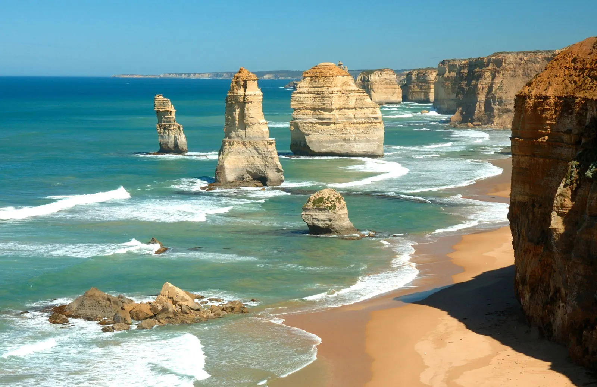
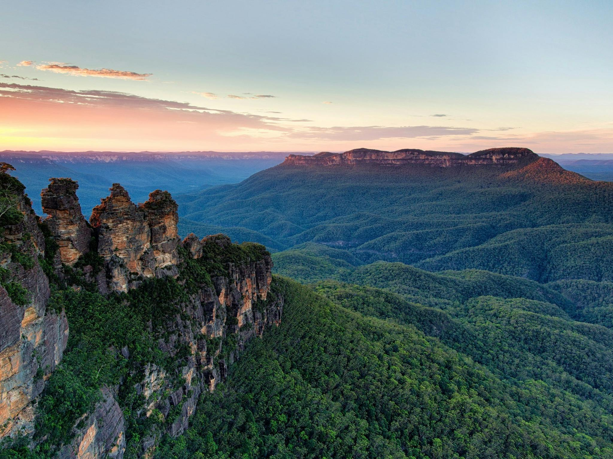
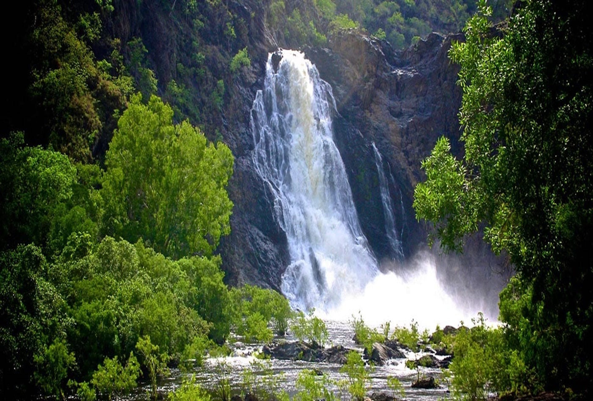
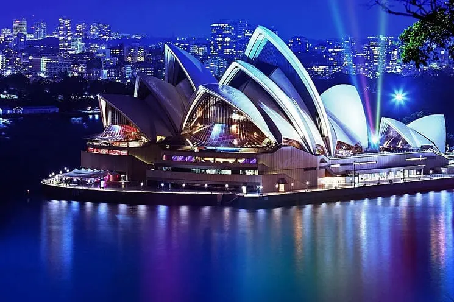

Australië
.svg)
Australië is een groot en divers land dat zowel een continent als een land is. Hier zijn belangrijke aspecten van Australië opgedeeld in verschillende categorieën:
Bezienswaardigheden
Great Barrier Reef (Queensland)
.jpeg) Het grootste koraalrif ter wereld,
zichtbaar vanuit de ruimte. Populair voor snorkelen en duiken.
Het grootste koraalrif ter wereld,
zichtbaar vanuit de ruimte. Populair voor snorkelen en duiken.
Uluru (Ayers Rock) (Northern Territory)
 Een enorme, rode monoliet in de Outback.
Heilige plek voor de Aboriginals. Bij zonsopgang en zonsondergang verandert het van kleur.
Een enorme, rode monoliet in de Outback.
Heilige plek voor de Aboriginals. Bij zonsopgang en zonsondergang verandert het van kleur.
The Twelve Apostles (Victoria)
 Kalkstenen rotsformaties langs de Great Ocean Road. Spectaculaire kustlandschappen.Blue Mountains (New South Wales)
 Beroemd om de Three Sisters-rotsformaties. Perfect voor wandelen en genieten van vergezichten.Daintree Rainforest (Queensland)
 Een van de oudste regenwouden ter wereld. Thuisbasis van unieke dieren en planten.Activiteiten
-
Duiken en snorkelen bij het Great Barrier Reef (Queensland): Verken het kleurrijke onderwaterleven en het grootste koraalrif ter wereld.
BridgeClimb Sydney (New South Wales): Wandel door de smalle straatjes en ontdek kleurrijke straatkunst en verborgen bars.
Skydiven boven Mission Beach (Queensland): Melbourne organiseert grote sportevenementen zoals de Australian Open (tennis) en de Melbourne Cup (paardenrennen).
Surfen: Populaire surfspots zijn Bondi Beach (Sydney), Byron Bay (New South Wales) en Bells Beach (Victoria).
Wandelen in de Outback: Verken de woestijnlandschappen rond Uluru, Kata Tjuta en Kings Canyon.